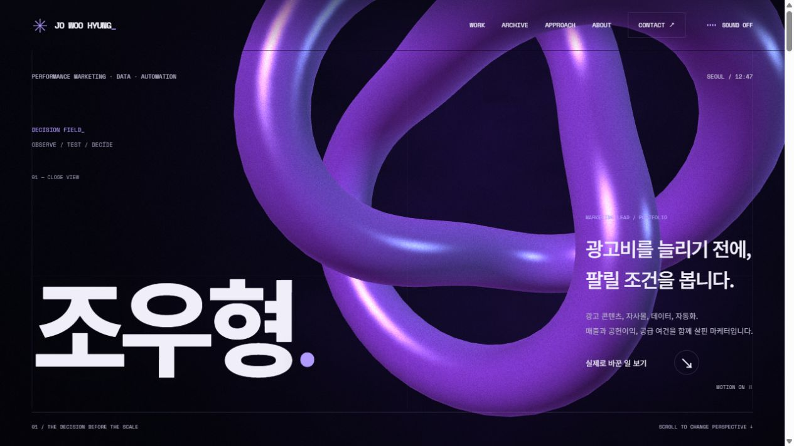
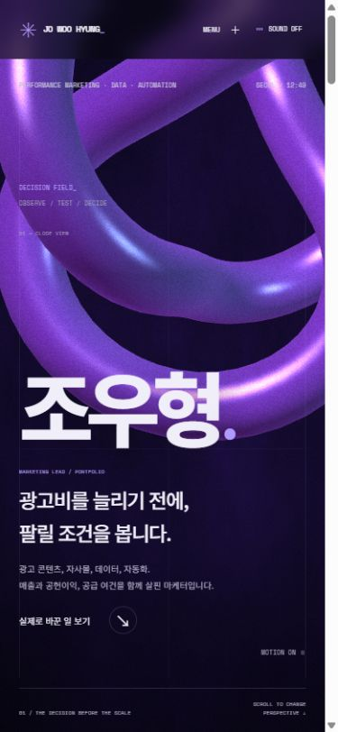
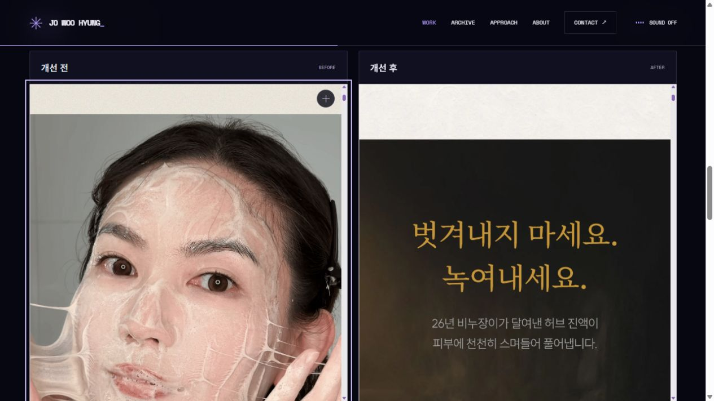
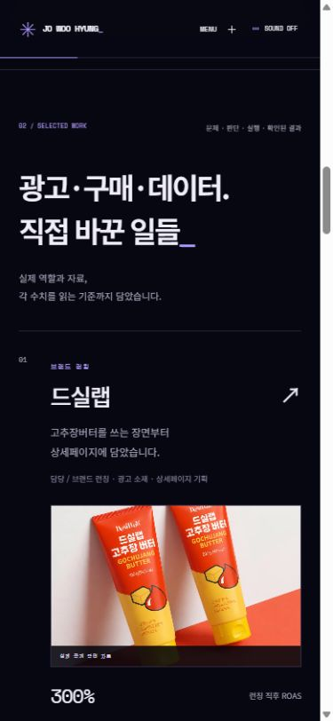
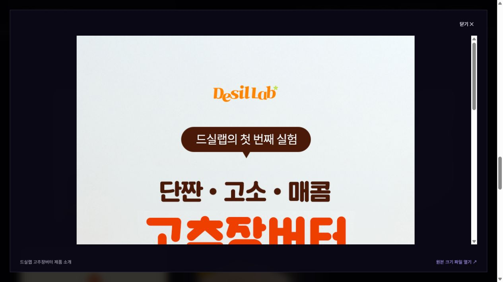

홈에서 주요 사례 7개, 기업별 데이터 구축 34개와 영상 16편을 펼쳐 볼 수 있습니다. 이전 상세 주소도 해당 항목으로 이동합니다. 텍스트와 레이아웃은 templates/portfolio.html 및 scripts/profile_build.py, 동작은 js/profile.js, 스타일은 css/profile.css에서 수정합니다. 아래 화면 캡처와 페이지 전환 설명은 이전 구성의 제작 기록입니다.
현재 포트폴리오 보기 ↗JO WOO HYUNG / PORTFOLIO V2 / 2026.11.18
현재 공개 사이트와 비교하기 위한 독립 버전입니다. 본 문서는 소유자를 위한 제작·수정·검수 기록이며, 일반 방문자의 기본 탐색 메뉴에는 넣지 않았습니다.
기존 메인, 전체 작업, 공개 영상 모음과 기업별 상세를 포함한 37개 HTML 페이지를 정리했습니다. 이미지·영상·포스터 참조는 192개이며, 외부 참고 링크 35개도 별도로 기록했습니다. 같은 파일을 여러 화면에서 쓰는 경우에는 URL 단위로 중복을 제거했습니다.
정안고 매출 95% 이상 증가는 5월 대비 8월의 관찰값입니다. 상세페이지 하나의 단독 효과로 쓰지 않았습니다. 모그라미 288%는 이수근 채널의 개별 브랜디드 콘텐츠 수치입니다. 자동화 15종의 절감 시간·오류율은 자료에 없어 새로 계산하지 않았습니다.
기존 자기소개에 기재된 ‘매출 두 배 목표 달성·최종 ROAS 263%·목표 270%’도 함께 유지했습니다. 특정 신제품의 브랜드명이 원본에 없으면 새로 추정해 붙이지 않았습니다.
Openstate를 데스크톱과 390px 모바일 화면에서 직접 확인했습니다. 사운드 선택 전 화면, 로딩 표시, 스크롤에 따른 오브젝트와 글자 변화, 고정 메뉴, 작은 사운드 제어, 모바일의 세로 배치를 확인했습니다.
| 직접 확인한 특징 | 전달하는 인상 | 새 버전 적용 위치 | 구현한 동작 |
|---|---|---|---|
| 검정·남색 공간, 보라빛 입체 오브젝트 | 깊이와 긴장감 | 히어로 | 독자적인 삼엽 매듭을 WebGL로 실시간 렌더링 |
| 스크롤 시 오브젝트 축소·회전과 글자 구도 변화 | 시점과 거리의 변화 | 히어로→작업 진입 | 스크롤 진행값으로 크기·각도·카메라 거리를 연속 제어 |
| Space Mono, 작은 라벨, 큰 타이포그래피 | 정밀한 기록과 큰 장면의 대비 | 이름·메뉴·사례 제목 | 영문은 짧은 라벨로 제한, 본문은 읽기 쉬운 한국어 |
| 얇은 세로·가로 선과 넓은 여백 | 정돈된 편집 화면 | 히어로 그리드·행 목록·상세 | 공통 구획선·여백·본문 폭 사용 |
| 필름처럼 보이는 거친 표면과 빛 | 물성 있는 화면 | 오브젝트 표면과 배경 | 셰이더의 미세 입자와 세 방향의 보라·청색 조명 |
| 모바일에서는 메뉴를 줄이고 세로 장면 강조 | 작은 화면에서의 집중 | 모바일 헤더·히어로 | 전체 탐색 메뉴 제공, 별도 카메라 배치와 148svh 구간 |
| 첫 진입의 ON/OFF 선택과 고정 사운드 제어 | 선택 가능한 몰입 | 사운드 선택·고정 헤더 | 기본 무음, 실제 재생 후에만 ON, 내비게이션 중 상태 유지 |
레퍼런스 오브젝트의 원본 구현 기술과 정확한 로딩 시간을 측정한 것은 아닙니다. 오디오 소스와 UI 상태는 확인했지만 실제 청취에 근거한 음색·리듬 평가는 하지 않았습니다. 새 사이트의 실시간 3D·모션 수치·음원은 별도로 설계한 제안입니다.
1안을 선정했습니다. 공헌이익·재고·생산 리드타임·출고 대응을 함께 본 기록, 초기 증액 이후 재구매와 LTV를 다시 판단한 경험이 가장 구체적으로 드러납니다. 2안과 3안의 관점은 관련 사례에서 실제 작업 설명으로 풀었습니다.
각 사례는 문제 → 판단 → 실행 → 실제 자료 → 결과와 해석 순서로 편집했습니다. 기간·비교 기준·채널을 붙이고, 확인되지 않은 인과나 개인의 단독 성과로 확장하는 표현을 줄였습니다.
기본 배경은 #070711, 보조 표면은 #101020, 본문은 #F0EEF8, 보조 본문은 #A6A3B8, 강조는 #B19AFF입니다. 한글은 Noto Sans KR, 짧은 영문 정보는 Space Mono를 사용합니다. 600px 이하 화면에서는 메뉴·카메라·프로젝트 이미지 배치를 다시 구성합니다.
| 장면 / 시작 조건 | 요소·변화 범위 | 길이·가감속·반복 | 종료 상태 / 모바일 |
|---|---|---|---|
| 히어로 진입·스크롤 | 매듭의 회전·축척·거리. 데스크톱 카메라 5.7→8.1, 축척 1.38→0.85 | 190svh 장면 중 약 90svh의 스크롤. 위치에 직접 대응하며 되돌리기 가능. 정지 시 아주 느린 자전 | 전체 형태가 보이는 구도. 모바일은 148svh, 별도 위치·적은 메시·낮은 해상도 |
| 제목·행의 화면 진입 | 27px 이동, 흐림 5px→0, 불투명도 0→1 | 0.8–0.9초 감속. 한 번만 등장 | 읽을 수 있는 정지 상태. 본문은 강제로 숨기지 않음 |
| 프로젝트 호버·키보드 포커스 | 실제 작업 미리보기, 약한 회전·이동·배율 변화 | 0.3–0.5초. 선택 해제 시 복원 | 모바일은 이미지를 기본 노출하고 탭으로 이동 |
| 목록→상세 | 제목과 페이지의 위치·투명도 전환 | 지원 브라우저의 View Transition 0.22–0.3초, 일반 탐색 대체 제공 | 정적 상세 URL. 뒤로 가면 목록 스크롤과 검색 조건 복원 |
| 전후 비교·이미지 확대 | 모드 선택, 실제 세로 이미지 스크롤, 비율 동기화, 원본 크기 열기 | 사용자 입력에 즉시 대응. 자동 반복 없음 | 터치·키보드·ESC 지원. 모바일은 한쪽만 크게 보는 모드 제공 |
| 사운드 켜기 | Flint의 Code Runner, 짧은 사인파 선택음 | 곡이 끝나면 처음부터 반복. 선택음 약 0.16초 | 실제 재생 중에만 ON. 기본 무음. 호버 효과음 없음 |
| 프로젝트 영상 재생·탭 숨김 | 영상이 소리와 함께 재생되면 배경 gain 0.32→0.035. 숨겨진 탭에서는 오디오·영상 정리 | 약 0.12초의 부드러운 음량 조절 | 영상 정지 후 복구. 원래 무음 선택은 유지 |
| 모션 감소·일시 정지 | 자동 회전·등장 효과 중단 | 반복 없음 | 정적 구도와 즉시 읽을 수 있는 텍스트. 시스템 모션 감소에서는 짧은 히어로 |
오브젝트는 새로 제작한 코드 기반 그래픽입니다. 실제 프로젝트 결과물은 원래 공개된 이미지·영상으로 표시했습니다. 배경음악은 조우형이 제공한 Flint의 Code Runner입니다.





| 수정할 항목 | 파일 | 방법 |
|---|---|---|
| 7개 서술형 사례 | content/projects.json | 제목·과제·판단·실행·결과·역할·기간·해석 수정 후 py build_v2.py |
| 홈·메뉴·소개·연락처 | build_v2.py | 공통 템플릿과 home 본문 수정 후 재생성 |
| 34개 기업의 원래 내용 | source/portfolio/*.html | 보관한 원본에서 사실을 확인하고 수정. 생성된 portfolio/*.html은 다음 빌드에서 다시 만들어짐 |
| 실제 광고 영상·이미지 | source/work.html, source/contents.html, img/, content/ | 원본 참조와 포스터 수정. 새 파일은 25MiB 미만으로 준비하고 실제 성과 근거와 분위기용 자료의 용도를 구분 |
| 정안고 비교 자료 | research/evidence-map.json, img/evidence/binusoap/ | 원본 URL·해시 매핑 유지. 파일을 교체했다면 새 출처·해시를 기록 |
| 색·글자·여백·반응형 | css/v2.css | 상단 변수와 각 화면 크기의 규칙 수정 |
| 3D 오브젝트·카메라·조명 | js/decision-field.js | 곡선, 메시, 셰이더, 스크롤 구도 값 수정 |
| 배경음 원곡·길이 | audio/ | 새 파일을 넣고 js/sound.js의 재생 경로, 이 안내서의 파일 링크, audio/source.json의 곡 정보와 SHA-256을 함께 갱신합니다. |
| 사운드 제어·효과음 | js/sound.js | 재생 상태, 음량 조절, 선택음 규칙 수정 |
| 탐색·뒤로 가기·확대·검색 | js/v2.js | 공통 동작 수정. 실제 상태가 바뀌는지 브라우저에서 재검수 |
cd C:\Users\LG\Desktop\그로스빌런\portfolio-v2 py -m pip install -r requirements.txt py build_v2.py py build_cloudflare.py py -m http.server 4174 --bind 127.0.0.1 --directory dist
수정 후 브라우저를 새로고침하세요. 서버가 영상을 전송 중이면 Windows에서 출력 폴더를 잠글 수 있으므로 서버를 종료한 뒤 빌드합니다. scripts/preview.ps1은 해당 프로젝트의 로컬 서버만 정리하고 빌드·재실행하는 편의 스크립트입니다.
이 버전의 브랜치는 codex/portfolio-v2-experience입니다. 현재 공개 버전의 master에 합치지 않고 미리보기로 배포했습니다. Cloudflare는 체크인한 정적 결과를 build_cloudflare.py로 묶어 제공합니다. JSON·템플릿을 수정한 경우에는 로컬에서 build_v2.py도 실행해 결과를 함께 커밋하세요.
실제 결과와 검수 환경은 검수 기록에서 확인할 수 있습니다. 자동 검사는 스크립트 scripts/verify.py로 다시 실행할 수 있습니다.
현재 완성본을 사용하는 데 추가로 필요한 자료는 없습니다. 공개 HTML·미디어와 프런트엔드 코드 저장소를 확보했습니다. 원래 공개된 상세페이지·데이터 화면·광고 영상은 실제 자료로 제공했습니다.
현재 제공된 웹사이트와 저장소에서는 캠페인 원시 집계표, 전체 자동화 15종의 개별 코드·시간 절감 측정표, Figma·PSD·After Effects 같은 편집 프로젝트 원본을 확인하지 못했습니다. 이런 자료가 확보되기 전에는 새 인과 효과나 절감률을 추가하지 않습니다.
과거 회사 사이트와 기사·앱 링크 일부는 주소가 바뀌었거나 이 확인 환경에서 HTTP/TLS 오류로 열리지 않았습니다. 이는 로컬에 확보한 프로젝트 작업 화면과 구분했습니다. 아래 목록은 사이트가 사라졌다고 단정하는 목록이 아닌, 이번 환경의 응답 기록입니다.
| 기존 참고 URL | 확인 결과 |
|---|---|
| 자료 목록의 checks에서 상태 코드를 확인할 수 있습니다. | |
레퍼런스의 실제 사운드 청취 분석과 모든 실기기·모든 브라우저 조합 검수는 수행 범위에 포함하지 못했습니다. 확인한 화면 크기와 브라우저는 검수 기록에 적었습니다.